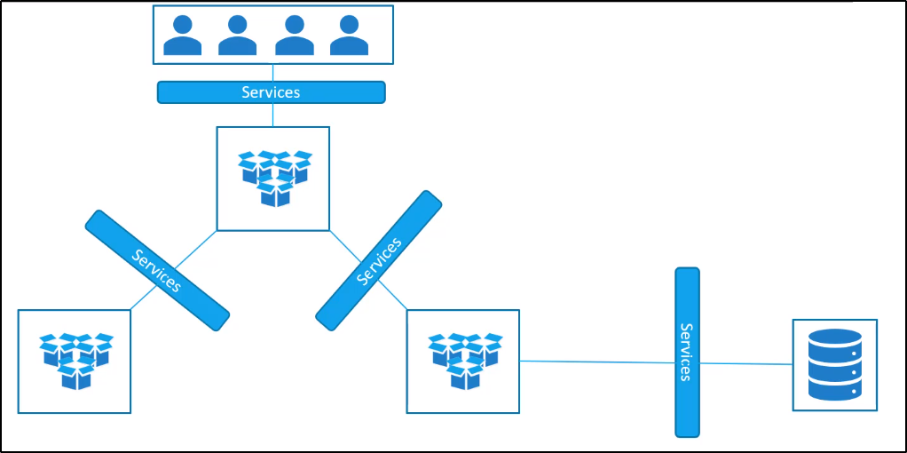

Services - NodePort
I Servizi in Kubernetes permettono la comunicazione
tra varie componenti, interne o esterne, di un applicazione.
I Kubernetes Services permettono di collegare le applicazioni
con altre applicazioni o con degli utenti.
Ad esempio: La nostra applicazione potrebbe avere
gruppi di POD, che runnano diverse sezioni:
frontend, backend, load to user, external data source etc.
Sono i Servizi che permettono la connettività verso l'End-User,
Backend-Frontend PODs e External Data Sources.
Questo ci permette anche il "loose coupling" tra microservizi
nella nostra applicazione

Diamo un'occhiata ad un use-case di un Servizio.
Abbiamo già parlato dei POD che comunicano tramite una rete interna.
Vediamo altri aspetti del Networking.
Parliamo dell'External Communication.
Esempio: Abbiamo deployato i nostri POD, con una webapp
che runna al loro interno.
Come fa un utente esterno ad accedere alla Web Page?
Diamo prima un occhiata al setup:

Supponendo che io sia su una rete interna al nodo:
non posso comunque accedere all'IP del POD!
Dal Nodo stesso al POD possiamo comunicare:

Quindi: come possiamo esporre la pagina Web?
Tramite la creazione di un Service.

Un Kubernetes Service è un oggetto proprio come i POD, ReplicaSet e Deployment.
Uno degli obiettivi del Service è di ascoltare su una porta del Node
e di fare forwarding delle richieste su quella porta su una porta del POD,
capace di darci il servizio scelto.
Questo tipo di servizio è noto come NodePortService.
Esistono anche altri tipi di servizi differenti.

NodePort Service:
Permette di rendere accessibile un POD all'esterno,
tramite l'utilizzo di una porta sul Node.
ClusterIP Service:
Serve a creare un Virtual IP all'interno del Cluster,
per permettere la comunicazione di diversi servizi
come E.G. Frontend to Backend servers.
LoadBalancer Service:
Provvedde un Load Balancer per la nostra applicazione,
in Supported Cloud Providers.
Esempio: per permettere la load balance su differenti server front-end.
Concentriamoci sul NodePort Service.

Da notare come i nomi delle port sono definite dal punto di vista del Service.
TargetPort dove vengono forwardate le richieste,
Port per indicare la propria Porta di forware verso il POD,
NodePort da dove ascolta le richieste.
E' possibile considerare il servizio cone un Virtual Server dentro il Node.
Dentro al Cluster, possiede il proprio indirizzo IP (detto ClusterIP del Service),
nel nostro caso è 10.106.1.12.
Diamo una breve accortenza alla NodePort.
Questa può avere range di porte (di default) da 30000 a 32767.
Vediamo come creare un Service tramite un YAML:
Ha tutti i campi principali a livello di root e non necessita di per forza di "labels".
La parte di differenza molto importante è la sezione "spec:"

Type:
Specifica il tipo di Service che stiamo creando.
Qui possiamo mettere NodePort, ClusterIP o LoadBalancer.
Ports:
Contiene dei sotto elementi, ovvero le porte da definire come- la targetPort (del POD)
- la port (del Service)
- la nodePort (del Node).
Piccola Accortenza: Ports è un Array. Attenzione al trattino.
L'unico valore obbligatorio da definire è il valore "port".
Se non provvedi la targetPort, si assume che è la stessa di port.
Se non provvedi la nodePort, verrà scelta automaticamente una aperta nel range (E.G. una tra 30000-32767)
Inoltre, essendo un array, possiamo mappare anche più porte nello stesso servizio!
Ma qualcosa manca: niente è connesso al servizio sul POD.
Abbiamo specificato le porte ma non su QUALE POD.
Ce ne potrebbero essere migliaia sulla porta scelta, per dire.
Per risolvere questo problema: useremo Labels e Selectors.
Basta inserire ESATTAMENTE i label usati per un determinato POD.

Ora possiamo usare il comando "kubectl create -f" per creare il Service.
Per vedere i service, ci basta usare il comando "kubectl get services"
Infine, possiamo effettuare le nostre operazioni sul servizio esposto ad un certo IP:nodePort

Che succede nel caso avessimo più POD con lo stesso Label?
Esempio: Abbiamo più POD con lo stesso Container ed Applicativo.

Qui succede che il Service seleziona TUTTI I PODs per forwardare loro le richieste dalla nodePort.
Non devi fare nessuna configurazione, per far si che questo succeda.
Per bilanciare il load, utilizza un RandomAlgorithm per distribuire il carico.
Nel nostro caso, il Service si comporta come un built-in Load Balancer,
per distribuire il peso attraverso tutti i PODs.

Vediamo cosa succede se i PODs sono distribuiti attraverso più nodi:

Nel nostro caso, Kubernetes crea un Service che contiene tutti i Node
nel Cluster e mappa le stesse targetPort e nodePort per tutti i nodi del Cluster.
In questo modo, puoi accedere al Service usando l'IP del nodo e la nodePort scelta:

Sintesi: nei casi di:- Single POD, Single Node
- Multiple PODs, Single Node
- Multiple PODs, Multiple Nodes
Il Service si crea sempre in un modo utile ad essere usato.
Quando i PODs sono rimossi o update, il Service viene automaticamente aggiornato,
rendendo altamente flessibile ed adattivo.
Generalmente, una volta creato, non va configurato o va poco configurato.